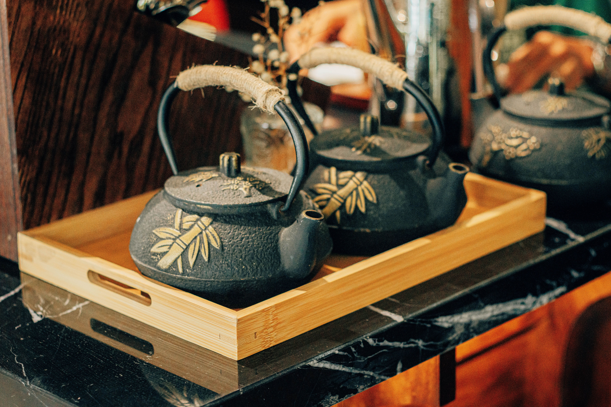
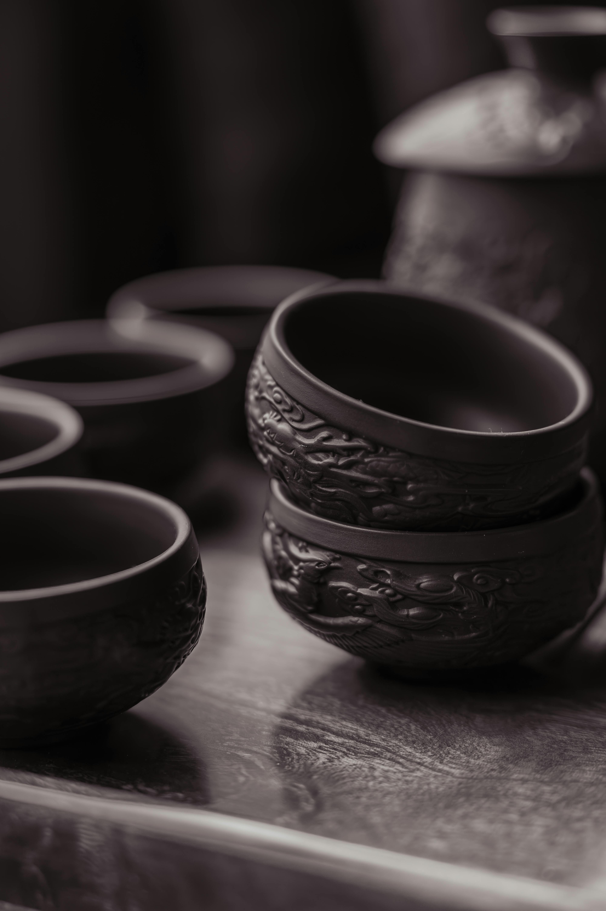
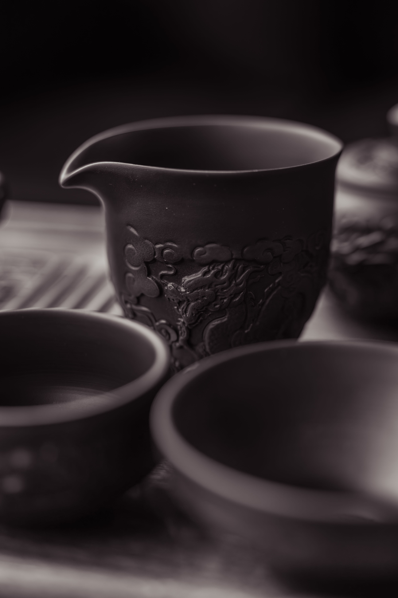
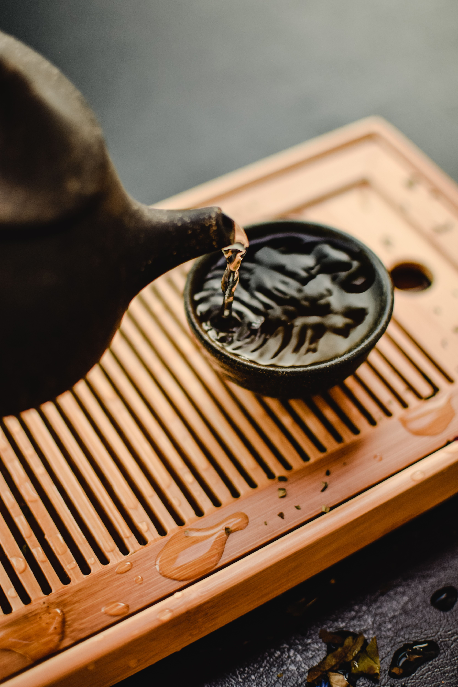

Służy do zaparzania liści herbaty. Najczęściej wykonywany jest z porcelany lub gliny.

Pozwalają w pełni docenić smak oraz aromat przygotowanego naparu.

Specjalne naczynie, do którego przelewa się herbatę przed podaniem gościom, aby zapewnić równomierny smak każdej porcji.

Ułatwia organizację ceremonii i utrzymanie porządku podczas parzenia.